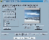

| 转眼就快到“千禧年”了，在这个特殊的日子，如果你的亲朋好友收到一张带着最美好祝愿、你亲手制作的电子贺卡，那该会有多高兴啊!这里一个小巧的贺卡制作工具——e－motional Greetings Creator，只需简单的五步，就能将你指定的图片、文字和声音合成一个EXE文件格式的贺卡。
1.Imagie Selection（图像选取）
 这里要选取的图像就是你个人贺卡的主画面。你可以按“Browse”按钮选择存贮在硬盘上的图像文件（文件格式可以是JPEG、GIF、PNG或BMP格式中的任一种），也可以按Scan/Capture
Image直接接收由扫描仪扫描的图像。选中后，在对话框的右边会出现该图像的缩图。在缩图的下方有一个“Preview Actual Size”按钮，按它可以预览实际尺寸的贺卡图像；如果你对实际显示的效果有特殊的要求，可以对窗口左边的“Image
Quality”项进行调整，软件缺省为“Medium（中等质量）”；如果你还不满意贺卡的实际尺寸，可以按“Resize the image”按钮，在“New
dimensions（新的尺寸）”中进行调整。想看一下效果，按“Preview”进行预览（接下来的四步中每步皆可预览）。
2.Add Text（加入文字）
就是在贺卡的图像中添加文字信息。如果你不想加入任何文字，可选“No Text Message”，否则选“Placement of Text on image”。在下面的“Placement of Text”框中，你可以调整文字在贺卡图像中的位置；在“Text Properties”框中，你可以选择文字的字形“Select Font”、文字的颜色“Text Color”和背景颜色“Background Color”；如果你想获得文字的透明效果，可以选“Make Text Color Transparent”一项。当然，最重要的是在“Enter Text Message（输入文本信息）”框中输入你美好的祝愿和衷心的祝福。
3.First Greeting（开启时的问候）
在这一步我们来加入贺卡开启时的声音文件。按“Load WAV File From Disk”，再选“Browse”一项就可从硬盘中选取现成的WAV文件；如果你想通过麦克风录入自己的问候，就在“Select Audio Source”中选择“Record From Microphone”，然后点“Record”一项，在“On Air”变成红色时开始录制。当然，如果你的朋友喜欢“此时无声胜有声”，可以直接选“No Audio”。
4.Exit Greeting（关闭时的祝福）
如果在关闭贺卡程序时也能听到问候的话语，那对方一定会感到非常亲切！这一步的所有操作参考第三步就行了。
5.Preview/Finish（预览/完成）
这一步最简单，点“Create the Card”就把我们的贺卡制成了可执行文件。
这下终于可以看到自己制作的贺卡了，快点“Preview the card”，怎么样，效果还不赖吧！下载地址:http://www.e－motional.com。(请作者速与本版编辑联系) |